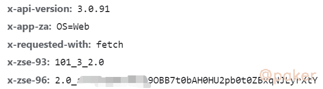
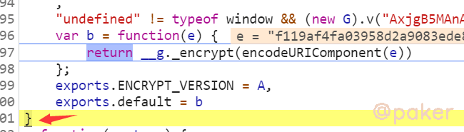
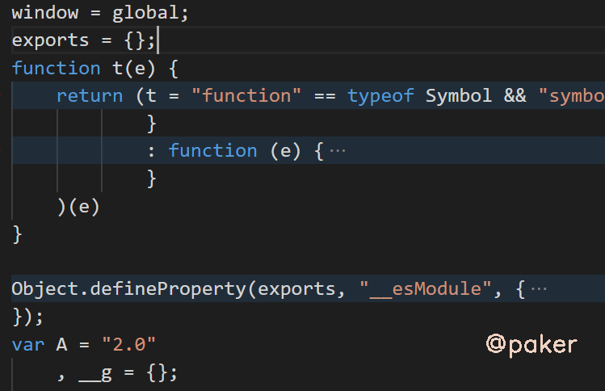

某乎搜索x-zse-96
学习下某乎发现搜索接口header中的x-zse-96参数，好像20年还是86来着，忍不住吐槽一下，你不动我不动，大家一起摸鱼不香吗！
示例网址(base64)：
aHR0cHM6Ly93d3cuemhpaHUuY29tL3NlYXJjaD90eXBlPWNvbnRlbnQmcT0lRTQlQjklOTIlRTQlQjklOTMlRTclOTQlQjclRTUlOUIlQTI=
1.抓包分析
接口：api/v4/search_v3?t=general&q=我爱祖国
请求参数：正常无加密(真善良)
请求头：x-zse-96加密了，测试发现cookie：d_c0=***这个也很重要

2.加密定位
全局搜索zse-96，在main.app js中找到
m.set("x-zse-96", "2.0_" + j)
向上看看，j = A.signature，再看A的生成
A = (0, i.default)(t, O.body, { zse93: g, dc0: _, xZst81: y })
其中t为api接口，g为101_3_2.0，dc0就是上文提到的cookie值，断点跟进去
return { source: d, signature: (0, o.default)((0, r.default)(d)) }
这里的signature就是x-zse-96的加密部分,d = 101_3_2.0+api接口+"cookie d_c0的值"
d = "101_3_2.0+/api/v4/search_v3?t=general&q=%E5%A5%BD&correction=1&offset=0&limit=20&filter_fields=undefined&lc_idx=0&show_all_topics=0+\"AODv2CPTqiGpZwzarcdfWLvFCbYReY=|1574861159\""
继续断点跟进去，e就是上文的d，m(e, t, n)的返回值就是对d进行了MD5，我们可以在python部分进行拼接然后直接MD5
function m(e, t, n) { return t ? n ? O(t, e) : h(O(t, e)) : n ? v(e) : h(v(e)) }
继续跟进，我们看到最后return __g._encrypt(encodeURIComponent(e))，参数e是上文的MD5，我们只需将大括号区间之内的js代码拷到本地即可

3.扣代码

会报错缺少atob方法，因为nodejs和浏览器环境的差异，不存在window.atob给我们用，可以自己写一个base64编码解码函数，抄百度 关于base64编码的原理及实现
var base64hash = 'ABCDEFGHIJKLMNOPQRSTUVWXYZabcdefghijklmnopqrstuvwxyz0123456789+/';
function atob(s) {
s = s.replace(/\s|=/g, '');
var cur, prev, mod, i = 0,
result = [];
while (i < s.length) {
cur = base64hash.indexOf(s.charAt(i));
mod = i % 4;
switch (mod) {
case 0:
//TODO
break;
case 1:
result.push(String.fromCharCode(prev << 2 | cur >> 4));
break;
case 2:
result.push(String.fromCharCode((prev & 0x0f) << 4 | cur >> 2));
break;
case 3:
result.push(String.fromCharCode((prev & 3) << 6 | cur));
break;
}
prev = cur;
i++;
}
return result.join('');
}
最后要注意的地方，扣下来的这段js生成的结果与浏览器生成的稍有不同，结尾多了9Tuw，需要自己截取！